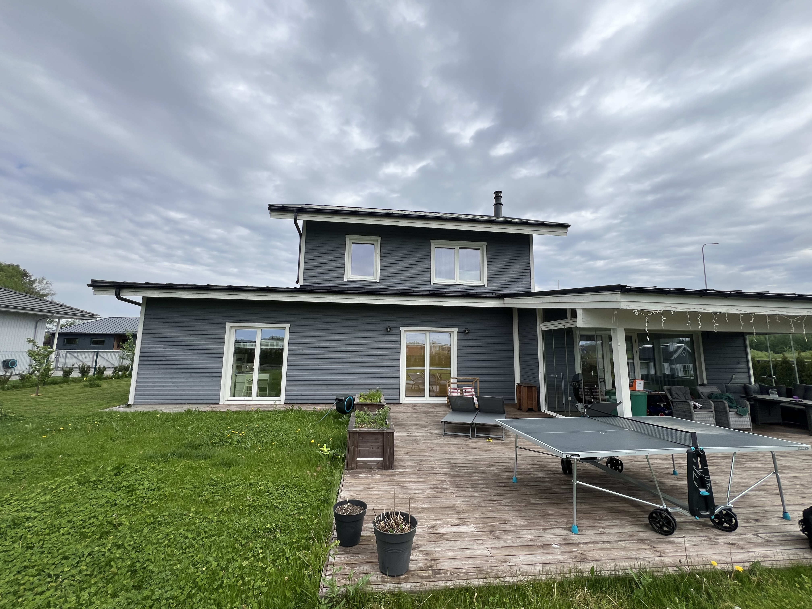

Fassaadi värvimine Tallinnas ja Harjumaal
Puit- ja krohvfassaadi pesu, kruntimine ja vastupidav värvimine.

RK Meistrid OÜ tegutseb veebilehe renoveerikodu.ee kaudu ning pakub puit- ja krohvfassaadide värvimist Tallinnas ja Harjumaal. Päringu hindamisel lähtume objekti seisukorrast, tööjärjekorrast, materjalidest ja realistlikust ajakavast.
Fassaadi värvimine annab majale värske välimuse ja kaitseb pinda niiskuse, UV-kiirguse ning ilmastiku eest. Renoveeri Kodu värvib puit- ja krohvfassaade Tallinnas ning Harjumaal.
Kvaliteetne värvimine algab pesust, lahtise värvi eemaldamisest ja kruntimisest. Valime värvisüsteemi vastavalt olemasolevale pinnale, mitte ainult soovitud toonile.
Mida teenus sisaldab?
- puit- ja krohvfassaadi pesu ning ettevalmistus
- lahtise värvi eemaldamine ja parandustööd
- kruntimine ja ilmastikukindel värvimine
- servade, aknapalede ja detailide viimistlus
Millal seda tellida?
See leht keskendub ainult fassaadi värvimisele, mitte kõigile fassaaditöödele. Nii väldime cannibalization probleemi: üldised parandused ja hooldus kuuluvad fassaaditööde lehele, värvimise otsija jõuab siia.
Tööprotsess
Puhastus
Peseme või puhastame pinna, eemaldame lahtised kihid ja laseme pinnal enne värvimist piisavalt kuivada.
Kruntimine
Krundime probleemsed või imavad kohad, et värv nakkuks ja toon jääks ühtlane.
Värvimine
Värvime sobivate ilmastikutingimustega ning kontrollime katvust, üleminekuid ja detailide viimistlust.
Värvimise hind ja ilmastik
Fassaadi värvimise hind sõltub pinna materjalist, pesu vajadusest, lahtise värvi eemaldamisest, kruntimisest, kõrgusest ja värvikihtide arvust. Ilmastik mõjutab tööd otseselt: liiga märg, liiga külm või liiga kuum pind võib rikkuda nakkumise ja värvi kestvuse.
Enne üleandmist kontrollime katvust, servasid, aknapalesid, sokli üleminekuid ja kohti, kus vana pind võis värvi ebaühtlaselt imada. Kui töö vajab tellinguid, planeerime need enne, et värvimine ei katkeks ligipääsu puudumise tõttu.
Kohalik kogemus ja tööde täpsustamine
Fassaadi värvimisel annab kestvuse eeltöö: pesu, kuivamine, lahtise värvi eemaldamine ja õige krunt mõjutavad tulemust rohkem kui toonivalik. Päringu hindamisel vaatame alati, milline on objekti ligipääs, kas töö toimub elatud ruumis, millised pinnad vajavad kaitsmist ja milline on mõistlik tööjärjekord. See aitab vältida olukorda, kus üks etapp tuleb hiljem uuesti avada või parandada.
Renoveeri Kodu eesmärk on anda selge ja realistlik hinnang enne töö alustamist. Kui fotodest ei piisa, lepime kokku objekti ülevaatuse. Nii saab täpsustada materjalid, ajakulu, seotud teenused ja võimalikud riskikohad enne, kui töö päriselt käima läheb.
Fassaadi värvimise puhul lepime enne kokku ka tooni, läike, värvisüsteemi ja prooviala vajaduse. Nii saab vältida olukorda, kus suur pind on küll tehniliselt kaetud, kuid toon või katvus ei vasta ootusele.
Fassaadi värvimise hinnad
Fassaadi värvimise hind sõltub pinna seisukorrast, pesu vajadusest, lahtise värvi eemaldusest, kruntimisest, värvikihtidest ja ligipääsust. Ilmastik ja kuivamisaeg mõjutavad samuti tööde graafikut.
Hinnapäringu kiirendamiseks lisa võimalusel fotod, mõõdud, objekti asukoht ja soovitud tähtaeg. Nii saame paremini aru, kas töö vajab objektikülastust või saab esmase hinnangu anda kirjelduse põhjal.
Praktiline tööinfo fassaadi värvimise kohta
Materjalid
Fassaadivärv tuleb valida pinna järgi. Puitfassaad, krohv ja sokkel vajavad erinevat krunti, värvi ja ettevalmistust; oluline on ka varasema värvisüsteemi sobivus.
Ajakulu
Ajakulu sõltub pesust, kuivamisest, lahtise värvi eemaldamisest, kruntimisest ja ilmast. Hea värvimistöö eeldab kuiva pinda ja sobivat temperatuuri.
Hinnategurid
Hinda mõjutavad pinna kõrgus, ligipääs, värvikihtide arv, parandustööd, akende ja detailide kaitsmine ning see, kas vaja on tellinguid.
Levinud vead
Levinud vead on värvimine liiga niiske või kuuma pinnaga, pesu vahele jätmine ja vana lahtise värvi ebapiisav eemaldamine.
Soovitused kliendile
Vali toon prooviala järgi, mitte ainult värvikaardi järgi. Suurel pinnal võib toon paista heledam või intensiivsem kui väikesel näidisel.
Korduma kippuvad küsimused
Millal on parim aeg fassaadi värvida?
Parim on kuiv ja mõõdukas ilm, kus pind ei ole märg, ülekuumenenud ega otsese vihmaohuga.
Kas vana värv tuleb eemaldada?
Lahtine ja kooruv värv tuleb eemaldada. Kõike vana värvi ei pea eemaldama, kui see on tugev ja sobib uue värvisüsteemiga.
Kas teete ka fassaadipesu?
Jah, vajadusel puhastame fassaadi enne värvimist.
Kui kaua fassaadivärv kestab?
Kestvus sõltub pinnast, ettevalmistusest, värvisüsteemist ja ilmastikukoormusest. Korralik eeltöö pikendab eluiga oluliselt.
Kas fassaadi võib värvida kohe pärast pesu?
Ei. Pind peab enne kruntimist ja värvimist piisavalt kuivama. Kuivamisaeg sõltub ilmast, materjalist ja fassaadi seisukorrast.
Kas sama värv sobib puidule ja krohvile?
Tavaliselt mitte. Puit, krohv ja sokkel vajavad erinevat värvisüsteemi ning vale toode võib põhjustada koorumist või niiskusprobleeme.
Kui tihti peaks puitfassaadi värvima?
See sõltub ilmakaarest, varasemast värvist, puidu seisukorrast ja hooldusest. Päikese ja vihma käes olevad küljed kuluvad tavaliselt kiiremini.
Kas värvimise ajal peab ilm olema täiesti päikeseline?
Ei. Liiga tugev päike võib olla isegi halb, sest värv kuivab pinnal liiga kiiresti. Oluline on kuiv, mõõdukas ja tootja nõuetele vastav ilm.
Milliste töödega fassaadi värvimine tavaliselt seostub?
Fassaadi värvimine on tavaliselt üks osa laiemast välitööde paketist. Kui pind vajab enne värvi parandamist, aitab fassaaditööde terviklik käsitlus; kõrgematel seintel tuleb läbi mõelda ligipääs ja tööohutus. Katuse servade, vihmaveesüsteemi või räästa juures võib värvimist olla mõistlik koordineerida ka katuse hooldus- või parandustöödega.